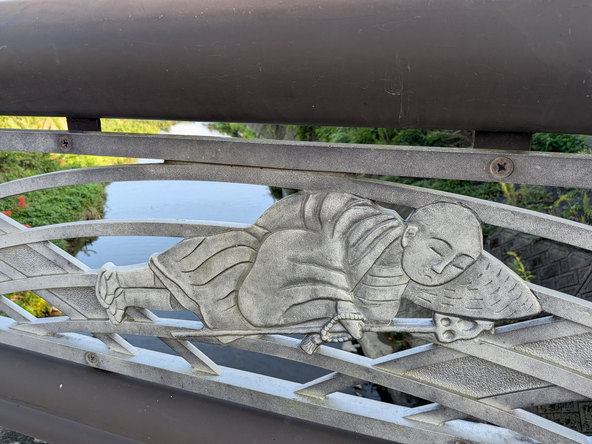
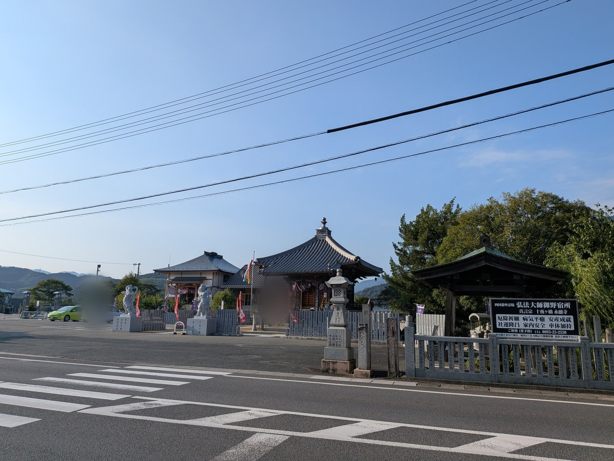

大洲の視点 ・ 出典: 大洲市議会 令和5年6月定例会会議録ほか（情報源日付: 2023-06-01） ・ 約11分で読める

「大洲の人は冷たい」って言われるの、聞いたことある？
もとになった十夜ヶ橋の話、じつは読み違いだったんよ。
お大師さまは、そもそも誰にも宿を頼んでないの。メモう！
3行でいうと調べた資料 6本
大洲には、あまりうれしくない言い伝えがある。
「大洲の人は冷たい」というものだ。
もとになっているのは、東大洲にある橋である。
調べていくと、この話は江戸時代にできた誤読らしいと分かってきた。
弘法大師が橋の下で一晩過ごした、と伝えられる場所である。
名前を十夜ヶ橋という。永徳寺大師堂の境内にある。

四国八十八か所の札所ではない。八十八か所の外にある番外霊場で、四国別格二十霊場のひとつだ。
ただし、ただの番外ではない。大洲市議会の一般質問でも「番外霊場の中でも随一と評されております」と紹介されている。
伝えられている話はこうだ。
四国をめぐっていた空海が、いまの久万高原町の大寶寺へ向かう途中、この地で日が暮れた。泊まる場所が見つからず、小川に架かる橋を見つけて、その下で一夜を過ごした。
暗く長い一夜が、十夜にも思えた。
そこで詠まれたとされるのが、この寺の御詠歌である。
ゆきなやむ 浮き世の人を 渡さずば 一夜も十夜の 橋と思ほゆ
十夜ヶ橋(永徳寺大師堂)の御詠歌
この歌から、この橋は十夜ヶ橋と呼ばれるようになった、と文献にはある。
宿を断られた、という話が後から足されている。
この話が出てくるのは、大洲市議会の会議録である。令和5年(2023年)6月20日の本会議で、一般質問に立った議員が、地元で聞いた言い伝えをそのまま紹介している。
一般質問は、議員が市の考えを市長たちにただす時間だ。やりとりは会議録として市のサイトに公開されていて、誰でも読める。
巡錫中の空海がこの地で一夜の宿を求めたが、見慣れない風体の空海を誰も迎え入れることはなく、やむを得ず小川に架かる橋を見つけ、仕方なくその橋の下で一夜を過ごすことにしたというふうに私には伝えられ、そのように認識しておりました
大洲市議会 令和5年6月20日の本会議(質問した議員の発言)
そして、こう続けている。
このお話にはさらに尾ひれがついて、大洲の人は冷たいなどという風評にも至っているようでございます
大洲市議会 令和5年6月20日の本会議(質問した議員の発言)
地元の年長者からは、こう言われたという。
大洲市民にとって大変不名誉なことであり、名誉を挽回してほしい
地元の年長者の言葉(大洲市議会 令和5年6月20日の本会議で、質問した議員が紹介)
そこでこの議員は、十夜ヶ橋の住職に直接たずねに行った。会議録には、議員自身の言葉でこう残っている。
このような逸話について間違えたことを申し上げるわけにはまいりませんので、直接十夜ヶ橋の住職にお尋ねいたしましたところ
大洲市議会 令和5年6月20日の本会議(質問した議員の発言。このあと住職から聞いた話が続く)
返ってきた話は、地元の言い伝えとは違っていた。
空海は、そもそも誰にも宿を頼んでいない。
ここが、この話のいちばん大事なところだと思う。
住職の説明として議会で紹介された内容は、こうだった。
およそ1200年前、遣唐使として中国に渡った空海は、真言密教のすべてを伝授されて帰国した。師の言葉に従い、民衆の苦しみを救うため四国をめぐる。阿波から土佐、そして伊予へ。
その途中、金山出石寺の山頂で、雪の舞い降る中、食べ物も寝るところもない厳しい修行をした。
思いを新たにして山を下り、大寶寺へ向かう途中でこの地に着き、日が暮れた。小川に架かる土橋があり、その下を一夜の宿とした。
人々の悩みや苦しみはとても深く、救いたい救いたいと考えていると、一晩が10日間の夜ほど長く感じた。
そのときに詠んだのが、あの歌である。
そして住職はこう付け加えたという。
空海は四国を巡錫中に民家に宿を求めたりすることは一度もなかった
永徳寺の住職の説明(大洲市議会 令和5年6月20日の本会議で、質問した議員が紹介)
つまり、断られたのではない。はじめから頼んでいない。
橋の下で過ごしたのは修行の一部であって、冷たくされた結果ではない、という筋になる。
江戸時代を境に、御詠歌の読み方が変わったのだという。
議会での説明はこうだ。
江戸時代を境に、御詠歌の解釈について、弘法大師に思いを寄せる人々の気持ちからだろうか、「なぜ誰もお大師様を泊めようとしなかったのか」という受け取り方が生まれた。そこから「大洲の人は冷たい」という解釈になり、言い伝えとして定着してしまった。
歌そのものは変わっていない。読む側の気持ちが変わった。
大師を慕う思いが強いほど、「なぜ誰も助けなかったのか」という問いが立ってしまう。
善意から出た誤読だったことになる。
もうひとつ、事実として押さえられている点がある。
住職によれば、その当時は、宿も民家も十夜ヶ橋の近辺にはなかった。
断る人がいなかったのではなく、そもそも人家がなかった。
宿
橋の下で過ごしたわけ
言い伝えは、江戸時代に御詠歌の受け取り方が変わって生まれたとされる。
永徳寺の住職は、この正しい起源や由来を、事あるごとにお遍路さんや人々に伝えているという。
じつは、議会でこの話が出たのは令和5年が初めてではない。
同じ議員が、8年前の平成27年(2015年)9月14日の本会議でも、住職から聞いた話をほぼ同じ言葉で紹介している。そのときの質問のきっかけは、地元の年長者からの頼みだった。名誉挽回のために、十夜ヶ橋へ向かう道に、歩き遍路さんのための休憩所を設けてくれないか、というものだ。
このとき答弁に立った市の産業経済部長は、名前の由来について、こう答えている。
十夜ヶ橋の地名につきましては、議員御案内のとおり、橋の下の厳しい環境を詠んだものではなく、人々を迷いの苦しみから救い、悟りの世界に渡し導くことを念じ続けた結果、一晩を10日ほどに感じたことからつけた地名であると理解しております
大洲市議会 平成27年9月14日の本会議(産業経済部長の答弁)
名前の由来については、市も住職の説明と同じ理解だと、議会の場で答えたことになる。
休憩所のほうは、候補地の選定や土地の取得といった課題があり、早急な対応は難しいという答えだった。令和5年6月の質問でも、議員は「いまだお接待所などの開設には至っておりません」と述べている。
「国の法律で確実に保護されていること」が前提条件になっているからだ。
四国4県と関係市町村は、四国八十八か所霊場と遍路道の世界遺産登録を目指している。
大洲市も四国遍路世界遺産登録推進協議会に参加していて、4つある部会のうち受入態勢の整備と資産の保護措置の2つに入っている。
市長は答弁で、登録の前提条件をこう説明した。
登録を目指す物件は国の法律で確実に保護されていることとありまして、日本では文化遺産は文化財保護法によって国宝、重要文化財、史跡、名勝、重要文化的景観などに指定されていることが必要となっております
大洲市議会 令和5年6月20日の本会議(市長の答弁)
これが、この運動の実務がなぜ地味なのかの答えである。
祈りや信仰の価値をいくら訴えても、法律で守られていなければ土俵に上がれない。
だから各県・各市町村は、札所寺院と遍路道を文化財として指定するための調査をやっている。
大洲市は令和元年度からこの調査事業を始めた。
そして令和5年3月20日、九州から遍路が通行した八幡浜街道夜昼峠越えが、国の史跡に指定された。
さらに、第43番札所の明石寺（西予市）と第44番札所の大寶寺（久万高原町）を結ぶ伊予遍路道大寶寺道についても、国の史跡指定を目指した手続きが進んでいる。
そして、つまずいているのはまさに「保護されていない」という点だった。
世界遺産に推薦されるには、その前に国内の世界遺産暫定一覧表に載る必要がある。ここに載らないと、そもそも推薦もされない。
四国遍路は平成19年12月に、この暫定一覧表への追加記載を求める提案書を提出している。
結果は、平成20年9月26日の文化庁の審議で示された。指摘された課題は、こうだった。
構成資産の大半が文化財として保護されておらず、資産の範囲も広域に及ぶことから、文化財の指定・選定を含めた保護措置の改善・充実に向けた取組
文化庁の審議の結果(平成20年9月26日)
落とされたわけではない。継続審査という扱いである。提案者が内容を検討・改善すれば、翌年度以降に基準を満たす見込みがある、と判断されたものが継続審査になる。
つまり、宿題を出された状態がずっと続いている。
提案書の提出から、すでに18年以上たっている。
大洲市が令和元年度から史跡指定の調査をやっているのも、令和5年に夜昼峠越えが史跡になったのも、この宿題への回答である。
1件ずつ文化財に指定していく。それを四国4県ぶん積み上げる。88の札所と、それをつなぐ1,400キロの道。しかもその多くは、いまも人が歩き、車が通る現役の生活道路である。
時間がかかるのは、当然といえば当然だった。
憲法があるので、市はお寺のトイレを直せない。
同じ議会で、もうひとつ具体的な相談が出ている。
十夜ヶ橋は、旧市内の内水を肱川の本川へ送り込む場所に立っている。だから水害に何度も遭ってきた。
2018年7月の西日本豪雨では境内が甚大な浸水被害を受け、本堂を取り壊すことになった。
コロナ禍もあって再建の資金は道半ばのまま、2023年5月7日に本堂の地鎮祭にこぎつけている。
そのお寺のトイレが、いまもくみ取り式である。
議員は、こう述べた。
まれにではありますが観光客やお遍路さんがスマートフォンなどの大切な身の回り品を便槽に落とされることもあるようで
大洲市議会 令和5年6月20日の本会議(質問した議員の発言)
本堂の再建に公金は出せない。それは分かっている。だからトイレだけでも、という相談だった。
市長の答えは、はっきりしていた。
市が寺院など宗教施設内のトイレの改修費用を支援することは憲法の政教分離の原則に抵触するおそれがございますので、現時点では難しいと考えています
大洲市議会 令和5年6月20日の本会議(市長の答弁)
ただし、ここで話は終わっていない。
市長は続けて、神奈川県鎌倉市の事例を挙げている。観光客が集中する地域で、新たに民間が設置する公衆トイレに市が補助を行っているという例だ。
境内のトイレは直せなくても、地域の公衆トイレなら道がある、という含みである。
当面の対応として、十夜ヶ橋の付近にある商業施設などのトイレにトイレ表示ステッカーを貼り、協議会のホームページでも紹介している。
再質問で、議員が端的に聞いている。十夜ヶ橋は観光資源だと考えているのか。
市長の答えはこうだった。
京都もそうでございますけれども、神社仏閣、観光資源になっているところはたくさんございます。番外霊場の十夜ヶ橋大師堂、そして例えば盤珪禅師が創立された如法寺、あるいは同じく番外霊場であります金山出石寺、これらについても観光資源と捉えることはできるというふうに私は考えております
大洲市議会 令和5年6月20日の本会議(市長の答弁)
信仰の場であることと、観光資源であることは両立する。そういう立て方だった。
意外だったのは、「大洲の人は冷たい」という話の反証が、大洲市議会の会議録に残っていることだった。
議員の質問の本題は、休憩所やトイレの相談だった。住職の話は、その前置きである。それでも、住職に直接たずねた話が平成27年と令和5年の2度、本会議で述べられ、市も名前の由来を同じように理解していると答えた。言い伝えを打ち消す話が、誰でも読める公の記録として残ったことになる。
八十八か所の外にありながら「随一」と呼ばれる橋が、その名前の由来をめぐって誤解され続けてきたことも含めて、伝わり方というのは思ったより脆いのだと思った。
この記事をサイトに掲載した日: 2026/08/28